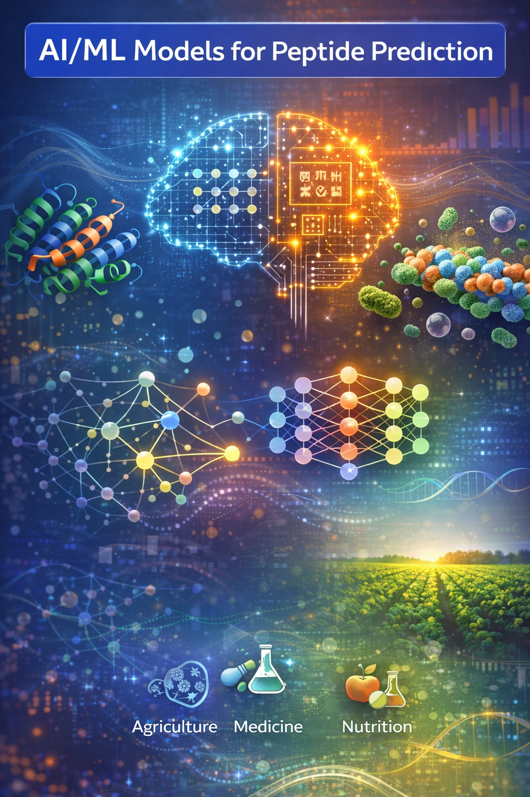

Research
My research lies at the intersection of computational structural biology, bioinformatics, and AI/ML.
Research themes

AI-enhanced peptide prediction & design
Protein language models, graph neural networks, and deep learning for peptide bioactivity.
- Developed pLM4CPPs, a protein language model–based CNN predictor for cell-penetrating peptides with interpretable sequence features.
- Building pLM4G-CPPs, a graph-learning framework integrating pLM embeddings with GNNs for improved classification.
- Extending unified deep learning architectures for broader bioactive peptide families and agriculture/food applications.